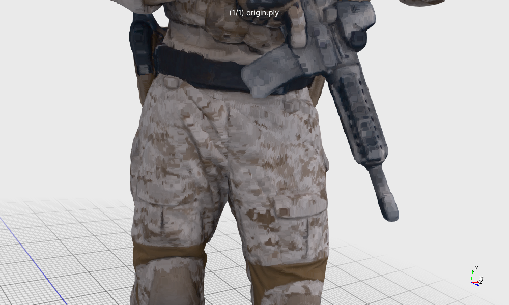
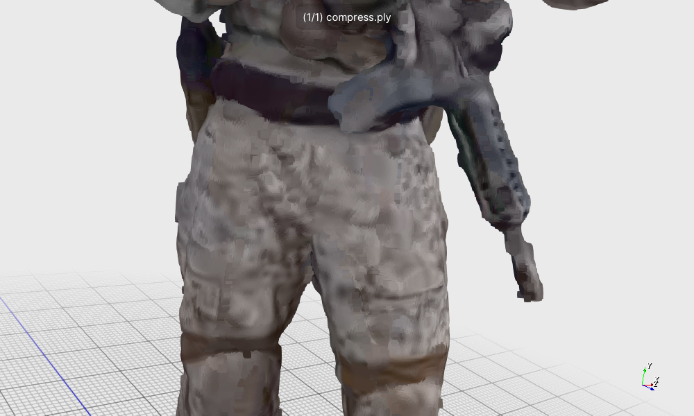
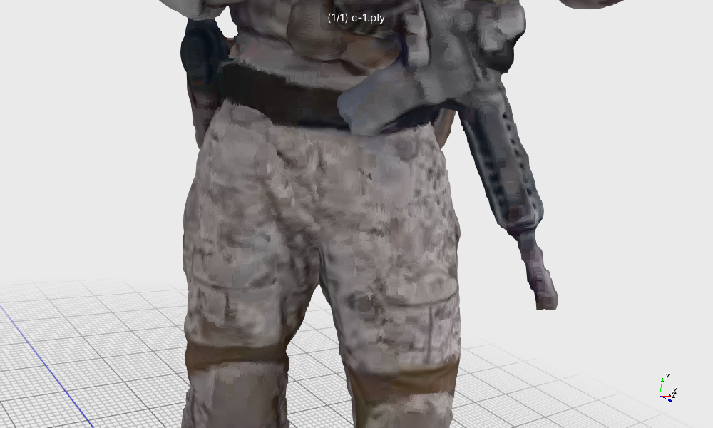

(a)

(b)

(c)
soldier_vox10_0536.ply sequence. (a) The original point
cloud. (b) The (a) point cloud after being compressed by V-PCC (r1
configuration). (c) The (b) point cloud after quality enhanced by
our proposed BaseNet and InterpolateNet.
Performance Comparison of Lightweight 3D Minkowski UNet Variants
| Network Config | Dataset | Inference Time (s) | Peak Memory (MB) | Chamfer Distance | Hausdorff Distance |
|---|---|---|---|---|---|
| Baseline | R1 | / | / | 1.23 | 12.63 |
| R2 | / | / | 0.93 | 9.82 | |
| R3 | / | / | 0.72 | 8.72 | |
| [32,32,64,128,256] | R1 | 5.38 | 452.23 | 1.34 | 12.69 |
| R2 | 5.67 | 469.84 | 1.09 | 9.78 | |
| R3 | 5.67 | 468.94 | 0.86 | 8.79 | |
| [32, 64, 128] | R1 | 2.85 | 159.71 | 1.36 | 12.61 |
| R2 | 2.95 | 169.55 | 1.07 | 9.74 | |
| R3 | 3.16 | 146.35 | 0.86 | 8.78 | |
| [16, 32, 64] | R1 | 2.53 | 88.22 | 1.35 | 12.59 |
| R2 | 2.61 | 94.63 | 1.06 | 9.86 | |
| R3 | 2.81 | 88.13 | 0.87 | 8.76 | |
| [4, 8, 16] | R1 | 2.40 | 78.68 | 1.34 | 12.67 |
| R2 | 2.58 | 84.96 | 1.07 | 9.86 | |
| R3 | 2.69 | 83.68 | 0.84 | 8.74 | |
| [4, 4, 4] | R1 | 2.43 | 78.33 | 1.35 | 12.67 |
| R2 | 2.51 | 84.62 | 1.07 | 9.86 | |
| R3 | 2.69 | 83.59 | 0.86 | 8.76 |
Training Methodology Performance Comparison
| Network Config | Dataset | Inference Time (s) | Peak Memory (MB) | Chamfer Distance | Hausdorff Distance |
|---|---|---|---|---|---|
| Baseline | R1 | / | / | 1.23 | 12.63 |
| R2 | / | / | 0.93 | 9.82 | |
| R3 | / | / | 0.72 | 8.72 | |
| Stage 1 | R1 | 2.40 | 78.68 | 1.34 | 12.67 |
| R2 | 2.58 | 84.96 | 1.07 | 9.86 | |
| R3 | 2.69 | 83.68 | 0.84 | 8.74 | |
| Stage 1 + Stage 2 | R1 | 2.44 | 78.68 | 1.39 | 12.72 |
| R2 | 2.52 | 84.96 | 1.11 | 9.81 | |
| R3 | 2.71 | 83.68 | 0.90 | 8.76 |
Dual-Stream Framework Performance Comparison
| Network Config | Dataset | Inference Time (s) | Peak Memory (MB) | Chamfer Distance | Hausdorff Distance |
|---|---|---|---|---|---|
| Baseline | R1 | / | / | 1.23 | 12.63 |
| R2 | / | / | 0.93 | 9.82 | |
| R3 | / | / | 0.72 | 8.72 | |
| A = Stage 1 | R1 | 2.40 | 78.68 | 1.34 | 12.67 |
| R2 | 2.58 | 84.96 | 1.11 | 9.81 | |
| R3 | 2.69 | 83.68 | 0.84 | 8.74 | |
| B = Stage 1 +Stage 2 | R1 | 2.44 | 78.68 | 1.39 | 12.72 |
| R2 | 2.52 | 84.96 | 1.11 | 9.81 | |
| R3 | 2.71 | 83.68 | 0.90 | 8.76 | |
| C = A + Model 2 | R1 | 4.63 | 78.68 | 1.32 | 12.99 |
| R2 | 4.86 | 84.96 | 1.08 | 10.52 | |
| R3 | 5.04 | 83.68 | 0.86 | 9.69 | |
| D = B + Model 2 | R1 | 4.64 | 78.68 | 1.34 | 13.02 |
| R2 | 4.83 | 84.96 | 1.11 | 10.46 | |
| R3 | 5.00 | 83.68 | 0.91 | 9.69 |
Performance Comparison of Lightweight 3D Minkowski UNet Variants (Owlii Dataset)
Evaluation performed on the R1 series dataset from Owlii, consisting of 20 point cloud sequences
(10 dancer and 10 basketball sequences) compressed using V-PCC with R1 configuration.
The reported metrics are averaged across all 20 sequences.
| Network Config | Dataset | PSNR A to B | PSNR B to A | Inference Time (s) | Peak Memory (MB) | Chamfer Distance | Hausdorff Distance |
|---|---|---|---|---|---|---|---|
| Baseline | R1 | 66.70 | 67.13 | / | / | 1.05 | 9.93 |
| [32,32,64,128,256] | R1 | 66.29 | 68.31 | 4.71 | 412.38 | 1.20 | 9.76 |
| [32, 64, 128] | R1 | 66.22 | 68.23 | 2.47 | 142.00 | 1.21 | 9.62 |
| [16, 32, 64] | R1 | 66.26 | 68.30 | 2.19 | 79.37 | 1.19 | 9.77 |
| [4, 8, 16] | R1 | 66.36 | 68.29 | 2.10 | 70.73 | 1.20 | 9.86 |
| [4, 4, 4] | R1 | 66.29 | 68.26 | 2.09 | 70.39 | 1.20 | 9.86 |
Training Methodology Performance Comparison (Owlii Dataset)
| Network Config | Dataset | PSNR A to B | PSNR B to A | Inference Time (s) | Peak Memory (MB) | Chamfer Distance | Hausdorff Distance |
|---|---|---|---|---|---|---|---|
| Baseline | R1 | 66.70 | 67.13 | / | / | 1.05 | 9.93 |
| Stage 1 | R1 | 66.36 | 68.29 | 2.10 | 70.73 | 1.20 | 9.86 |
| Stage 1 + Stage 2 | R1 | 65.92 | 68.61 | 2.09 | 70.73 | 1.26 | 9.86 |